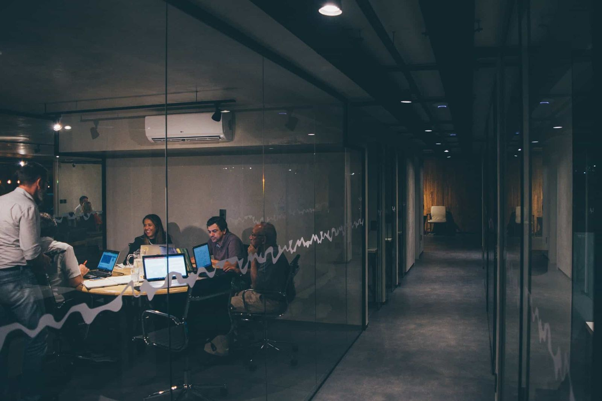
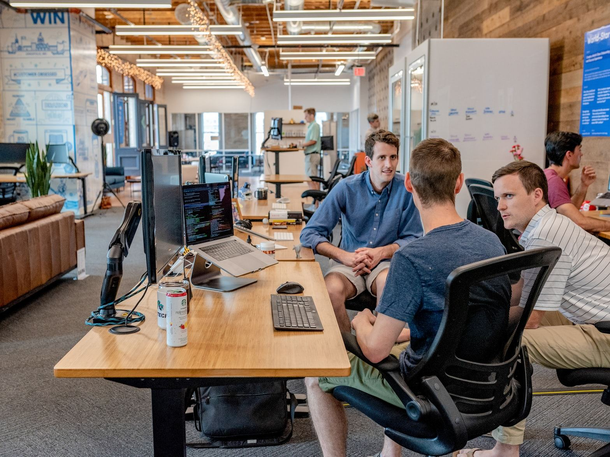
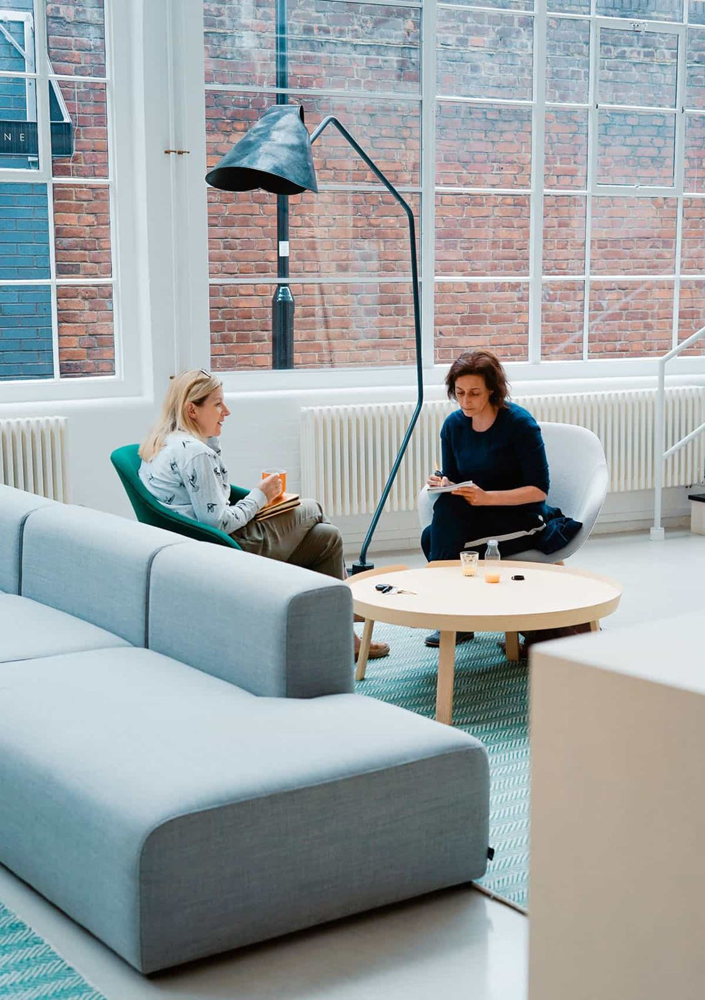

Acompanyem
el teu projecte
Cooperativa especialitzada en gestió, planificació i captació de recursos per a entitats i projectes d’economia social.


Què és AmbTu
AmbTu és una cooperativa de treball associat sense ànim de lucre que acompanya entitats, empreses socials i projectes amb impacte en la seva gestió, planificació i captació de recursos. El seu objectiu és ajudar-los a créixer de manera sostenible, reforçant tant la viabilitat econòmica com l’impacte social, ambiental i comunitari dels projectes.
Des d’AmbTu es dona resposta a una necessitat molt habitual dins l’economia social i solidària: comptar amb un suport proper, especialitzat i adaptat a cada realitat per poder ordenar idees, accedir a finançament, gestionar subvencions, planificar recursos i prendre decisions amb més seguretat.

Com t’acompanyem des d’AmbTu
Cada entitat és diferent. Partim del moment i de les necessitats del teu projecte i hi adaptem l’acompanyament.
- Ordenem Posem ordre a les idees, definim prioritats i planifiquem els recursos per decidir amb seguretat.
-
 Financem
Busquem i gestionem el finançament que necessita el projecte, de la convocatòria a la justificació.
Financem
Busquem i gestionem el finançament que necessita el projecte, de la convocatòria a la justificació.
- Consolidem Acompanyem el dia a dia de l’entitat perquè sigui viable i l’equip guanyi autonomia.
Impacte
Consulta les memòries →Novetats
Totes les novetats →-

September 21, 2026 Nova guia de preguntes i respostes sobre Projectes Singulars 2026 Llegeix-la → -

September 21, 2026 El Laboratori Coyolxauhqui acompanya dones migrants i racialitzades en la construcció i consolidació dels seus projectes Llegeix-la → - September 9, 2026 Programa IKIGAI: acompanyament estratègic bonificat per a 35 projectes entre 2026 i 2027 Llegeix-la →
Subscriu-te al butlletí
Rep les últimes novetats sobre economia social, subvencions i formacions